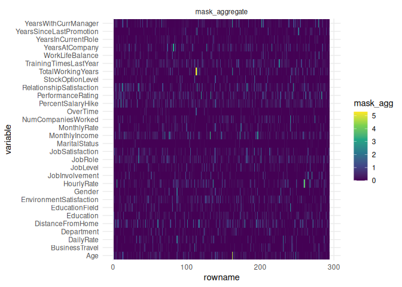
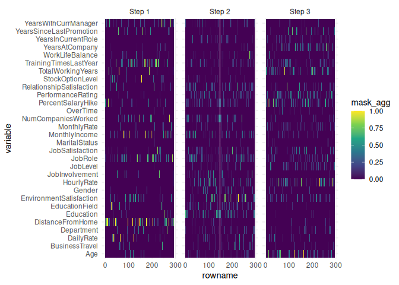

An R implementation of: TabNet: Attentive Interpretable Tabular Learning (Sercan O. Arik, Tomas Pfister).
The code in this repository started by an R port using the torch package of dreamquark-ai/tabnet implementation.
TabNet is now augmented with
Coherent Hierarchical Multi-label Classification Networks (Eleonora Giunchiglia et Al.) for hierarchical outcomes
Optimizing ROC Curves with a Sort-Based Surrogate Loss for Binary Classification and Changepoint Detection (J Hillman, TD Hocking) for imbalanced binary classification.
Installation
Install {tabnet} from CRAN with:
install.packages('tabnet')The development version can be installed from GitHub with:
# install.packages("pak")
pak::pak("mlverse/tabnet")Basic Binary Classification Example
Here we show a binary classification example of the attrition dataset, using a recipe for dataset input specification.
library(tabnet)
suppressPackageStartupMessages(library(recipes))
library(yardstick)
library(ggplot2)
set.seed(1)
data("attrition", package = "modeldata")
test_idx <- sample.int(nrow(attrition), size = 0.2 * nrow(attrition))
train <- attrition[-test_idx,]
test <- attrition[test_idx,]
rec <- recipe(Attrition ~ ., data = train) %>%
step_normalize(all_numeric(), -all_outcomes())
fit <- tabnet_fit(rec, train, epochs = 30, valid_split=0.1, learn_rate = 5e-3)
autoplot(fit)The plots gives you an immediate insight about model over-fitting, and if any, the available model checkpoints available before the over-fitting
Keep in mind that regression as well as multi-class classification are also available, and that you can specify dataset through data.frame and formula as well. You will find them in the package vignettes.
Model performance results
As the standard method predict() is used, you can rely on your usual metric functions for model performance results. Here we use {yardstick} :
metrics <- metric_set(accuracy, precision, recall)
cbind(test, predict(fit, test)) %>%
metrics(Attrition, estimate = .pred_class)
#> # A tibble: 3 × 3
#> .metric .estimator .estimate
#> <chr> <chr> <dbl>
#> 1 accuracy binary 0.840
#> 2 precision binary 0.840
#> 3 recall binary 1
cbind(test, predict(fit, test, type = "prob")) %>%
roc_auc(Attrition, .pred_No)
#> # A tibble: 1 × 3
#> .metric .estimator .estimate
#> <chr> <chr> <dbl>
#> 1 roc_auc binary 0.466Explain model on test-set with attention map
TabNet has intrinsic explainability feature through the visualization of attention map, either aggregated:
explain <- tabnet_explain(fit, test)
autoplot(explain)
or at each layer through the type = "steps" option:
autoplot(explain, type = "steps")
Self-supervised pretraining
For cases when a consistent part of your dataset has no outcome, TabNet offers a self-supervised training step allowing to model to capture predictors intrinsic features and predictors interactions, upfront the supervised task.
pretrain <- tabnet_pretrain(rec, train, epochs = 50, valid_split=0.1, learn_rate = 1e-2)
autoplot(pretrain)
The example here is a toy example as the train dataset does actually contain outcomes. The vignette vignette("selfsupervised_training") will gives you the complete correct workflow step-by-step.
{tidymodels} integration
The integration within tidymodels workflows offers you unlimited opportunity to compare {tabnet} models with challengers.
Don’t miss the vignette("tidymodels-interface") for that.
Missing data in predictors
{tabnet} leverage the masking mechanism to deal with missing data, so you don’t have to remove the entries in your dataset with some missing values in the predictors variables.
Imbalanced binary classification
{tabnet} includes a Area under the (AUM) loss function nn_aum_loss() dedicated to your imbalanced binary classification tasks.
Try it out in vignette("aum_loss")
Comparison with other implementations
| Group | Feature | {tabnet} | dreamquark-ai | fast-tabnet |
|---|---|---|---|---|
| Input format | data-frame | ✅ | ✅ | ✅ |
| formula | ✅ | |||
| recipe | ✅ | |||
| Node | ✅ | |||
| missings in predictor | ✅ | |||
| Output format | data-frame | ✅ | ✅ | ✅ |
| workflow | ✅ | |||
| ML Tasks | self-supervised learning | ✅ | ✅ | |
| classification (binary, multi-class) | ✅ | ✅ | ✅ | |
| unbalanced binary classification | ✅ | |||
| regression | ✅ | ✅ | ✅ | |
| multi-outcome | ✅ | ✅ | ||
| hierarchical multi-label classif. | ✅ | |||
| Model management | from / to file | ✅ | ✅ | v |
| resume from snapshot | ✅ | |||
| training diagnostic | ✅ | |||
| Interpretability | ✅ | ✅ | ✅ | |
| Performance | 1 x | 2 - 4 x | ||
| Code quality | test coverage | 85% | ||
| continuous integration | 4 OS including GPU |
Alternative TabNet implementation features